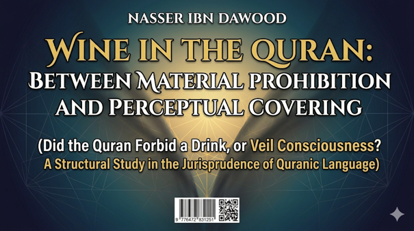

Nasser Ibn Dawood

Text extracted from the author-supplied Word edition; consult the original source.
Preparing the reader…
## Title: Wine in the Quran: Between Material Prohibition and Perceptual Covering
### Subtitle: Did the Quran Forbid a Drink, or Veil Consciousness? A Structural Study in the Jurisprudence of Quranic Language
---
### I. The Global Knowledge Manifesto
Knowledge is a universal right. The author firmly believes that wisdom should not be locked behind paywalls or language barriers.
- **Global Access Policy:** All books in this library are available for free in multiple digital formats (PDF, HTML, DOCX, TXT).
- **The Digital Library:** As of early 2026, the collection hosts 68 volumes (34 in Arabic and 34 in English), fully optimized for AI-assisted research and digital archiving.
- **Official Platforms:**
- Main Website: nasserhabitat.github.io/nasser-books/
- GitHub: nasserhabitat/nasser-books
### II. Translator’s Note: The Bridge of Meaning
This English edition is a condensed conceptual adaptation. It is not a word-for-word translation, but rather an "extraction of essence." It presents the core philosophical framework in accessible English, omitting the exhaustive linguistic debates and classical references found in the original Arabic text.
For the academic researcher: The original Arabic version remains the primary source for comprehensive linguistic analysis, detailed exegesis (Tafsir), and the complete bibliography.
---
### Introduction: Why This Book?
In contemporary Islamic thought, the question of "wine" ( *khamr* ) has become more than a minor jurisprudential debate about a specific drink. It has turned into a window revealing a much deeper crisis: a crisis in the very method of reading the Quran itself.
Historically, Islamic consciousness has almost completely identified *khamr* with intoxicating beverages. This understanding, formed over centuries, moved from the realm of scholarly interpretation ( *ijtihad* ) to that of unquestioned cultural certainty. However, a direct return to the Quran reveals a far more complex picture. The Quran does not present the concept of wine in a single, isolated verse. Instead, it distributes the term across multiple, interconnected contexts: alongside gambling ( *maysir* ), in the context of obstructed perception, as a description of Paradise, within the dream of Prophet Joseph, and in discussions about "drunken" eyesight.
This book argues that the inherited crisis is not that the tradition offered a specific understanding, but that this understanding turned into a "closed system," preventing any re-evaluation of the concept's original semantic structure. The goal is not to demolish tradition or to legalize the prohibited. Rather, it is to reopen the methodological question: **How do we read the Quranic concept?** Is a late juristic term enough to understand the original structure of the concept within the Quranic language itself?
Thus, the question of wine becomes a question about the nature of consciousness itself: how does one lose awareness? How is perception "covered"? And how does a human being transform from a reflective creature into a consumer of ready-made meanings?
---
### Chapter 1: The Central Problem – Drink or Function?
The book's central problem stems from a simple observation: the Islamic debate on "wine" transformed from an attempt to understand a complex Quranic concept into a jurisprudential debate centered on a specific substance. While this produced a coherent legal system, it also pushed deeper Quranic questions to the margins.
The book poses its essential question: **When the Quran spoke of "wine," was it establishing the prohibition of a specific substance, or was it revealing a functional structure related to the covering (veiling) of perception and the disabling of consciousness?**
This question does not aim to deny the physical dimension of wine, nor to reduce the concept to pure symbolism. Rather, it seeks to re-examine the relationship between substance, effect, and function within the Quranic system. The Quran often moves not by the logic of rigid physical classification, but by the logic of functions and outcomes—the logic of a thing's effect on the human being, consciousness, society, and civilization.
Therefore, the research goes beyond the traditional question, "Is drinking wine forbidden?" to a deeper one: **What makes something "wine" ( *khamr* ) in the Quranic perspective in the first place?**
---
### Chapter 2: The Linguistic Root (Kh-M-R): From Material to Function
The root (Kh-M-R) in Arabic fundamentally revolves around **covering, veiling, and concealing**. From this root, we get:
- *Khamara*: to cover or hide something.
- *Khimar*: a head cover or veil.
- *Khamira* (yeast): the agent that mixes with dough, changing it internally beneath a cover.
- *Khamara al-'aql*: something that mixes with the mind and covers its clarity.
This linguistic analysis suggests that "wine" ( *khamr* ) in the Quran may be closer to a **functional name** than a chemical or physical one. It is not just "what is made from grapes," but rather **"whatever performs the function of covering (veiling) perception."**
The book carefully distinguishes between:
- **The Physical Substance:** The historical and material reality of an intoxicating drink.
- **The Functional Structure:** The effect of this substance in disabling conscious discrimination ( *Furqan* ).
The Quran appears more concerned with the effect on consciousness than with the abstract physical classification. This explains why the Quran consistently links wine to:
- Turning away from the remembrance of God ( *dhikr* ).